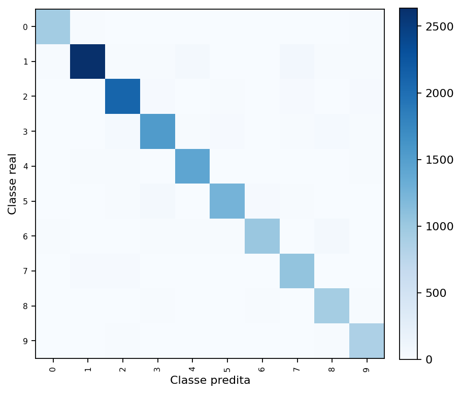
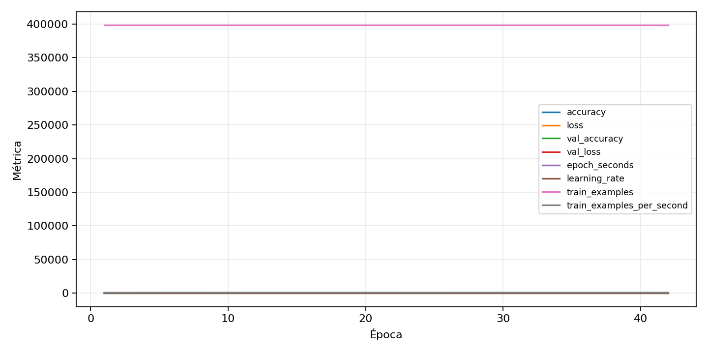

| n_samples | 14893 |
|---|---|
| loss | 0.2666698098182678 |
| accuracy | 0.9232525347478682 |
| balanced_accuracy | 0.9215242742286174 |
| macro_f1 | 0.9185125728310478 |


| Índice | Classe | Suporte | Precisão | Recall | F1 |
|---|---|---|---|---|---|
| 0 | 0 | 1004 | 0.9279368213228035 | 0.9362549800796812 | 0.932077342588002 |
| 1 | 1 | 2844 | 0.9613561793656581 | 0.9272151898734177 | 0.943977089672454 |
| 2 | 2 | 2210 | 0.9394618834080718 | 0.9479638009049773 | 0.9436936936936937 |
| 3 | 3 | 1707 | 0.9071005917159763 | 0.8980667838312829 | 0.9025610833088018 |
| 4 | 4 | 1497 | 0.9255874673629243 | 0.9472277889111557 | 0.9362826015186531 |
| 5 | 5 | 1390 | 0.937874251497006 | 0.9014388489208633 | 0.9192956713132796 |
| 6 | 6 | 1155 | 0.9280510018214936 | 0.8822510822510823 | 0.9045716822015091 |
| 7 | 7 | 1142 | 0.8862876254180602 | 0.9281961471103327 | 0.9067579127459366 |
| 8 | 8 | 1006 | 0.862708719851577 | 0.9244532803180915 | 0.892514395393474 |
| 9 | 9 | 938 | 0.8853633572159673 | 0.9221748400852878 | 0.9033942558746736 |
{"adapter":"svhn","balance_mode":"oversample","class_names":["0","1","2","3","4","5","6","7","8","9"],"dataset":"svhn","dataset_options":{},"dataset_root":"/home/msduda/datasets-tcc/svhn","native_channels":3,"normalization":"zscore","num_classes":10,"protocol":{"checkpoint_monitor":"val_macro_f1","dtype_policy":"mixed_float16","early_stopping":{"patience":10,"restore_best_weights":true},"evaluation_augmentation":false,"input_channels":"native","optimizer":"Adam","pretrained_weights":false,"reduce_lr_on_plateau":{"factor":0.3,"min_lr":1e-07,"patience":4},"resize":"proportional_padding","test_time_augmentation":false,"training_from_scratch":true},"seed":42,"source_fingerprint":"7db49be5026c8b7da2f91e322de4245a9678833ee2ae7cd8c1a5feac9c0da7c3","source_manifest":{"class_names":["0","1","2","3","4","5","6","7","8","9"],"joined_samples":99289,"metadata":{"include_extra":false,"layout":"svhn-mat"},"name":"svhn","native_channels":3,"source_path":"/home/msduda/datasets-tcc/svhn","splits":{"test":26032,"train":73257},"target_size":64},"target_size":64,"test_fraction":0.15,"train_fraction":0.7,"training":{"augmentation":{"brightness_delta":0.03,"contrast_lower":0.92,"contrast_upper":1.08,"cutout_max_frac":0.08,"cutout_prob":0.25,"flip_lr":true,"noise_std":0.005,"translate_frac":0.05,"zoom_max":1.04,"zoom_min":0.96},"batch_size":512,"default_image_size":64,"dtype_policy":"mixed_float16","early_stopping_patience":10,"extra_fraction":2.0,"image_size_overrides":{"gtsrb":128},"keras_verbose":1,"learning_rate":0.0003,"max_epochs":100,"preprocess_cache_max_mib":2048,"reduce_lr_factor":0.3,"reduce_lr_min_lr":1e-07,"reduce_lr_patience":4,"shuffle_buffer_max_mib":1024},"validation_fraction":0.15}
{"epochs_completed":42,"epochs_recorded":42,"evaluation_seconds":17.14564730899292,"fit_seconds_current_attempt":20472.368485535007,"max_epoch_seconds":632.7894246630021,"max_epochs":100,"mean_epoch_seconds":483.82131694516664,"mean_train_examples_per_second":826.5763641107894,"median_train_examples_per_second":843.0913493163687,"min_epoch_seconds":463.3502665519991,"selected_checkpoint":"/mnt/c/source/repos/teste-modelos-tcc/outputs/remaining-ram-capped/svhn/runs/svhn__zscore__oversample__seed-42/checkpoints/best.keras","total_seconds":20320.495311697,"training_seconds":20320.495311697,"wall_seconds_current_attempt":20550.611656368004}
{"elapsed_seconds":20550.680282860005,"event_counts":{"data_preparation_end":1,"data_preparation_start":1,"epoch_end":42,"evaluation_end":1,"evaluation_start":1,"fit_end":1,"fit_start":1,"periodic":4065,"run_completed":1,"train_start":1},"generated_at":"2026-07-31T23:43:53.341+00:00","gpu_backend":"pynvml","interval_seconds":5.0,"metrics":{"cpu_percent":{"count":4115,"max":17.8,"mean":12.46055893074119,"min":0.0,"p50":12.4,"p95":13.4},"disk_data_free_bytes":{"count":4115,"max":998223269888.0,"mean":998223268938.4049,"min":998223261696.0,"p50":998223269888.0,"p95":998223269888.0},"disk_data_percent":{"count":4115,"max":2.7,"mean":2.7,"min":2.7,"p50":2.7,"p95":2.7},"disk_data_total_bytes":{"count":4115,"max":1081101176832.0,"mean":1081101176832.0,"min":1081101176832.0,"p50":1081101176832.0,"p95":1081101176832.0},"disk_data_used_bytes":{"count":4115,"max":27885559808.0,"mean":27885552565.59514,"min":27885551616.0,"p50":27885551616.0,"p95":27885555712.0},"disk_output_free_bytes":{"count":4115,"max":7829712896.0,"mean":4729930040.550182,"min":1705902080.0,"p50":4989636608.0,"p95":6945955840.0},"disk_output_percent":{"count":4115,"max":99.8,"mean":99.53832320777643,"min":99.2,"p50":99.5,"p95":99.7},"disk_output_total_bytes":{"count":4115,"max":999374712832.0,"mean":999374712832.0,"min":999374712832.0,"p50":999374712832.0,"p95":999374712832.0},"disk_output_used_bytes":{"count":4115,"max":997668810752.0,"mean":994644782791.4498,"min":991544999936.0,"p50":994385076224.0,"p95":996688041164.8},"elapsed_seconds":{"count":4115,"max":20550.612181,"mean":10284.739039798786,"min":0.030963,"p50":10284.706645,"p95":19545.126483400003},"gpu_count":{"count":4115,"max":1.0,"mean":1.0,"min":1.0,"p50":1.0,"p95":1.0},"gpu_memory_percent":{"count":4115,"max":50.76732635498047,"mean":40.13302418325246,"min":39.6820068359375,"p50":39.79835510253906,"p95":42.3380374908448},"gpu_memory_total_bytes":{"count":4115,"max":8589934592.0,"mean":8589934592.0,"min":8589934592.0,"p50":8589934592.0,"p95":8589934592.0},"gpu_memory_used_bytes":{"count":4115,"max":4360880128.0,"mean":3447400527.1329284,"min":3408658432.0,"p50":3418652672.0,"p95":3636809728.0000057},"gpu_temperature_c":{"count":4115,"max":53.0,"mean":44.99902794653706,"min":39.0,"p50":45.0,"p95":48.0},"gpu_utilization_percent":{"count":4115,"max":100.0,"mean":13.352855407047388,"min":0.0,"p50":1.0,"p95":44.0},"process_cpu_percent":{"count":4115,"max":220.0,"mean":163.5613608748481,"min":0.0,"p50":162.5,"p95":173.1},"process_read_bytes":{"count":4115,"max":312856576.0,"mean":312844533.85953826,"min":312483840.0,"p50":312856576.0,"p95":312856576.0},"process_rss_bytes":{"count":4115,"max":6946897920.0,"mean":6623907331.359417,"min":3213758464.0,"p50":6729809920.0,"p95":6886952960.0},"process_vms_bytes":{"count":4115,"max":52014874624.0,"mean":51679561184.02333,"min":48764268544.0,"p50":51790438400.0,"p95":51929899008.0},"process_write_bytes":{"count":4115,"max":1241088.0,"mean":1241088.0,"min":1241088.0,"p50":1241088.0,"p95":1241088.0},"ram_available_bytes":{"count":4115,"max":13441818624.0,"mean":10032356836.502552,"min":9710755840.0,"p50":9928101888.0,"p95":10779616870.400003},"ram_percent":{"count":4115,"max":41.6,"mean":39.633365735115426,"min":19.1,"p50":40.3,"p95":41.2},"ram_total_bytes":{"count":4115,"max":16619085824.0,"mean":16619085824.0,"min":16619085824.0,"p50":16619085824.0,"p95":16619085824.0},"ram_used_bytes":{"count":4115,"max":6908329984.0,"mean":6586728987.497448,"min":3177267200.0,"p50":6690983936.0,"p95":6848098304.0}},"sample_count":4115,"schema_version":1}